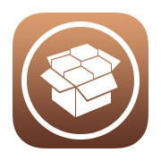

 MidnightChips Repo
MidnightChips
My Repo
Add to Cydia
Hosted Packages
Ext3nder Installer
A Patched Version of Ext3nder-Installer that works on iOS 11. Credit goes to the creators of Ext3nder, Extender and jtool.
More info
Fluidity
A free alternative to LittleX, gives iPhoneX UI and gestures to non-iPhoneX devices
More info
HomeGesture
iPhoneX Commands on non-iPhoneX Devices
More info